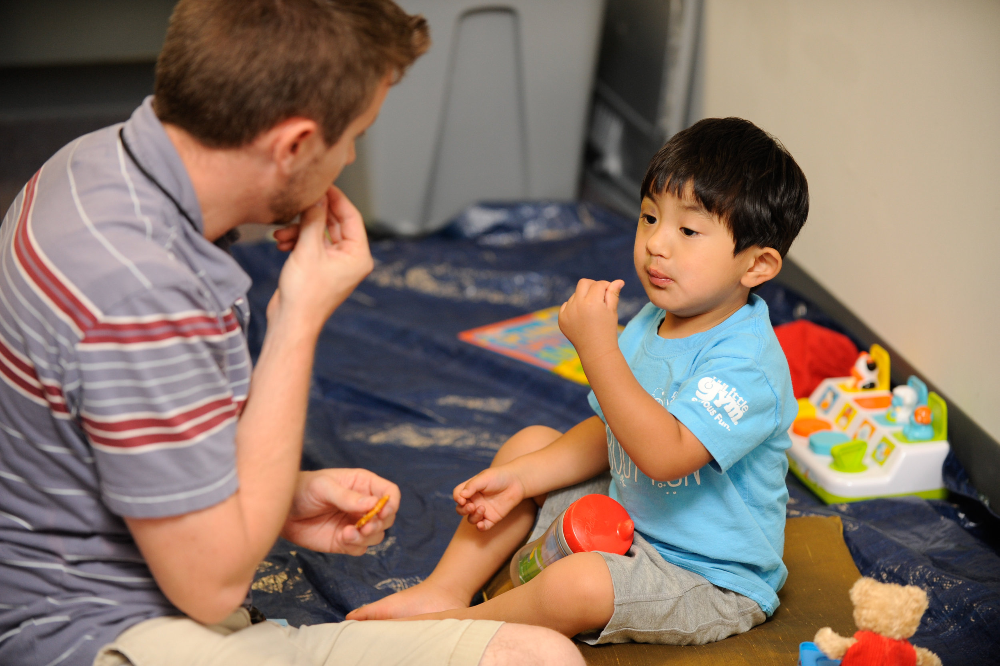

Design Challenge
What is the ultimate goal for the user experience?
The design challenge study comes from the Human Centered Design Toolkit by IDEO. Following the questions in this worksheet, I was able to narrow down the ultimate goals for this website and how the user interacts with it.